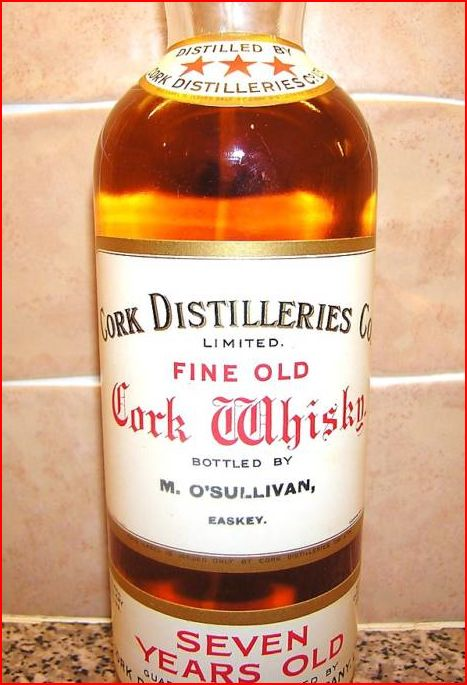
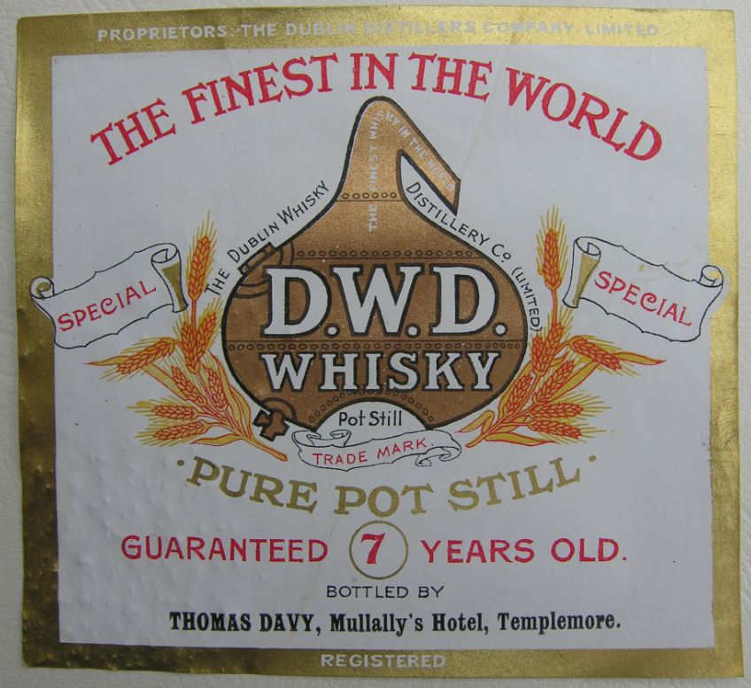

Yes as Will says, Cork had a great tradition of spelling whisky with out the
e.
The spelling with an
e was basically a modern standardisation by IDG (Now IDL) when they had the monopoly on the production of Irish Whiskey.
It was decided that to differentiate Irish from Scotch was to introduce Irish Whiskey to the world by emphasizing that all irish whiskey was spelt with an e.
An Old Paddy Blend

- Old Paddy Blend Label.JPG (62.02 KiB) Viewed 525 times
An Older Cork Distillers Co label
- 
- CDC7yoLabel.JPG (66.81 KiB) Viewed 525 times
But It wasn't just Cork Whisky ...
We also have examples of Dublin Whisky
See this DWD Lable
- 
- DWDIrishWhiskyLable.JPG (114.1 KiB) Viewed 525 times